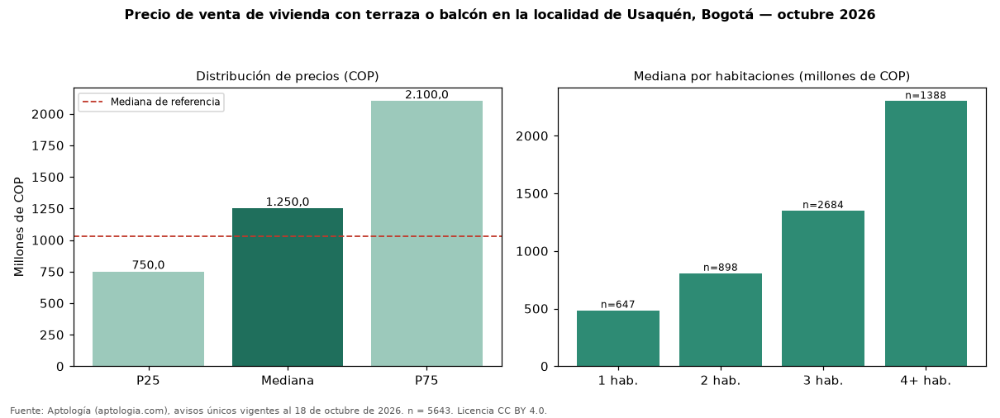

Precio de venta de vivienda con terraza o balcón en la localidad de Usaquén, Bogotá — octubre 2026
Con 5643 avisos únicos, el precio mediano de vivienda con terraza o balcón en venta en la localidad de Usaquén, Bogotá es COP 1,25 mil millones. Frente a toda la oferta de venta en la localidad de Usaquén, Bogotá (COP 1,03 mil millones), la diferencia es de 21 % por encima. Frente a los avisos sin terraza ni balcón del mismo grupo (COP 920 millones, n = 8430), la diferencia es de +36 %; por metro cuadrado, +19 %. El rango intercuartílico va de COP 750 millones a COP 2,10 mil millones (razón 2,8). Por metro cuadrado, la mediana es COP 8.233.501/m² (+11 % frente a COP 7.391.304/m²), puesto 6 de 19 localidades comparables. Cruzando con la oferta de arriendo equivalente, la rentabilidad bruta implícita es 8,3 % anual. Por habitaciones: 1 habitación, COP 485 millones (n = 647); 2 habitaciones, COP 807 millones (n = 898); 3 habitaciones, COP 1,35 mil millones (n = 2684); 4 o más habitaciones, COP 2,30 mil millones (n = 1388). Datos abiertos CC BY 4.0 de Aptología; fuente y búsqueda de inmuebles: https://www.aptologia.com/venta/bogota/usaquen. Archivos: PDF de 2 páginas, CSV con las cifras y gráfica PNG.

| Avisos únicos | 5643 |
|---|---|
| Percentil 25 | COP 750.000.000 |
| Mediana | COP 1.250.000.000 |
| Percentil 75 | COP 2.100.000.000 |
| Mediana por m² | COP 8.233.500 |
Fuente: avisos vigentes de portales inmobiliarios recopilados por Aptología, deduplicados (mínimo 30 avisos únicos por celda). Precios pedidos, no cerrados. Fecha: 2026-10-18.